To conclude this chapter on applications of linear models, we look at some uses of linear inequalities and their graphs.
Subsection2.5.1Graphs of Inequalities in Two Variables
Recall that a linear inequality can have many solutions. \(~\alert{\text{[TK]}}\) For example, the solutions of \(x + 2 \lt 5\) are all numbers less than \(3\text{.}\) So it should not be surprising that inequalities in two variables also have many solutions.
Definition2.5.1.
A solution to an inequality in two variables is an ordered pair of numbers that satisfies the inequality.
Example2.5.2.
Find a solution to the inequality \(x + y \ge 10,000\) for \(x = 2000\)
Solution.
For \(x = 2000\text{,}\) we have
\begin{equation*}
2000 + y \ge 10,000~~~~~~\text{or}~~~~~~y \ge 8000
\end{equation*}
You can check that any value of \(y\) greater than or equal to 8000 provides a solution when \(x=2000\text{.}\) For example, \((2000, 9000)\) is a solution because \(2000 + 9000 \gt 10,000\text{.}\)
We can gain some insight into the nature of the solutions if we rewrite the inequality as
\begin{gather*}
y \ge − x + 10,000
\end{gather*}
This inequality says that for each \(x\)-value, we must choose points with \(y\)-values greater than or equal to \(-x + 10,000\text{.}\) As we saw in Example 2.5.2 above, when \(x = 2000\text{,}\) the solutions have \(y\)-values greater than or equal to 8000. Solutions for \(x = 2000\text{,}\)\(x = 6000\text{,}\) and \(x = 11,000\) are shown in the figure. Do you see a pattern emerging?
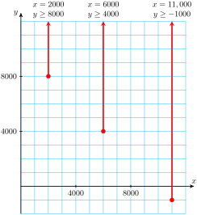
The graph of the inequality must show all the points whose coordinates are solutions. We found some solutions to the inequality \(x + y \ge 10,000\) in Example 2.5.2 above by choosing a value for \(x\) and solving for \(y\text{.}\) A more efficient way to find all the solutions of the inequality is to start with the graph of the corresponding equation
\begin{equation*}
y = -x + 10,000
\end{equation*}
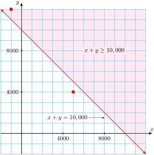
The graph is a straight line with slope \(-1\text{.}\) Any point above this line has a \(y\)-coordinate greater than \(~ {-x} + 10,000~ \) and hence satisfies the inequality. Thus, the graph of the inequality includes all the points on or above the line \(~y = -x + 10,000~\text{,}\) as shown by the shaded region in the figure. Of course, the shaded points are also solutions to the original inequality, \(~x + y \ge 10,000~\text{.}\)
For example, the point \((-1000, ~12,000)\) is a solution, because
On the other hand, the point \((5000, 4000)\) does not lie in the shaded region because its coordinates do not satisfy the inequality.
So, just as the solutions of a linear inequality in one variable can be a portion of the \(x\)-axis, the solutions of a linear inequality in two variables can be a portion of the \(xy\)-plane.
Checkpoint2.5.3.Practice 1.
Find one \(y\)-value that satisfies the inequality \(y - 3x \lt 6\) for each of the \(x\)-values in the table.
\(x\)
\(1\)
\(0\)
\(-2\)
\(y\)
Graph the line \(y - 3x = 6\text{.}\) Then plot your solutions from part (a) on the same grid.
Answer1.
\(5\)
Answer2.
\(0\)
Answer3.
\(-3\)
Solution.
\(x\)
\(1\)
\(0\)
\(-2\)
\(y\)
\(\alert{5}\)
\(\alert{0}\)
\(\alert{-3}\)
(Many answers are possible.)
A graph is below.
Subsection2.5.2Finding the Solutions
Let us organize our observations from the discussion above to develop a method for finding the solutions of a linear inequality.
A linear inequality can be written in the form
\begin{equation*}
ax + by + c \le 0 \qquad\text{ or }\qquad ax + by + c \ge 0
\end{equation*}
The solutions consist of the line \(ax + by + c = 0\) and a half-plane on one side of that line. We shade the half-plane to show that all its points are included in the solution set.
To decide which side of the line to shade, we can solve the inequality for \(y\) in terms of \(x\text{.}\) If we obtain
\begin{equation*}
y \ge mx + b \qquad(\text{ or } y \gt mx + b)
\end{equation*}
then we shade the half-plane above the line. If the inequality is equivalent to
\begin{equation*}
y \le mx + b \qquad(\text{ or } y \lt mx + b)
\end{equation*}
Then we graph the corresponding line \(~\alert{\text{[TK]}}\)
\begin{equation*}
y = \frac{4}{3}x-4
\end{equation*}
with \(y\)-intercept is \(-4\) and slope \(m=\dfrac{4}{3}\text{.}\) Finally, we shade the half-plane below the line. The completed graph is shown at right.
Caution2.5.5.
Be careful when isolating \(y\text{.}\) Remember to reverse the direction of the inequality whenever we multiply or divide by a negative number. For example, the inequality
\begin{equation*}
y ~ \alert{\lt} ~ {-3x}+4
\end{equation*}
An inequality that uses \(\gt\) or \(\lt\) instead of \(\ge\) or \(\le\) is called strict. The graph of a strict inequality includes only the half-plane and not the line. In that case we use a dashed line for the graph of the equation \(ax + by + c = 0\) to show that it is not part of the solution.
Checkpoint2.5.6.Practice 2.
Graph the solutions of the inequality \(4x - 2y \lt -8\text{.}\)
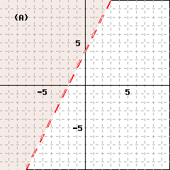
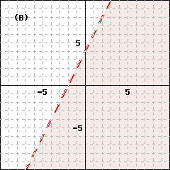
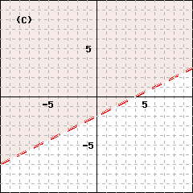
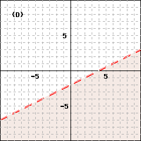
Select the appropriate graph.
(A)
(B)
(C)
(D)
none of the above
Answer.
\(\text{(A)}\)
Solution.
Checkpoint2.5.7.QuickCheck 1.
The solutions of a linear inequality in two variables consist of a boundary line and a
single point
quadrant
semicircle
half-plane
.
An inequality that uses \(\gt\) or \(\lt\) instead of \(\ge\) or \(\le\) is called
strict
non-strict
compound
conditional
.
If we multiply or divide an inequality by a negative number we must
reverse
simplify
copy
obey
the direction of the inequality symbol.
The shaded region shows all the
planes
solutions
constants
slopes
of the inequality.
Answer1.
\(\text{half-plane}\)
Answer2.
\(\text{strict}\)
Answer3.
\(\text{reverse}\)
Answer4.
\(\text{solutions}\)
Solution.
half-plane
strict
reverse
solutions
Subsection2.5.3Using a Test Point
A second method for graphing inequalities does not require us to solve for \(y\text{.}\) Because all the solutions lie on one side of the boundary line, we only need to find one soution! Once we have graphed the boundary line, we can decide which half-plane to shade by using a test point. The test point can be any point that is not on the boundary line itself.
Example2.5.8.
Graph the solutions of the inequality \(~~3x - 2y\lt 6\)
Solution.
First, we graph the line \(3x - 2y = 6\text{,}\) as shown below. We will use the intercept method. The intercepts are \((2, 0)\) and \((0, -3)\text{,}\) so we sketch the boundary line through those points.
Next, we choose a test point. Because \((0, 0)\) does not lie on the line, we choose it as our test point. We substitute the coordinates of the test point into the inequality to obtain
Because this is a true statement, \((0, 0)\) is a solution of the inequality. Since all the solutions lie on the same side of the boundary line, we shade the half-plane that contains the test point. In this example, the boundary line is a dashed line because the original inequality was strict.
Here is a summary of our test point method for graphing inequalities.
To Graph an Inequality Using a Test Point.
Graph the corresponding equation to obtain the boundary line.
Choose a test point that does not lie on the boundary line.
Substitute the coordinates of the test point into the inequality.
If the resulting statement is true, shade the half-plane that includes the test point.
If the resulting statement is false, shade the half-plane that does not include the test point.
If the inequality is strict, make the boundary line a dashed line.
We can choose any point for the test point as long as it does not lie on the boundary line. We chose \((0, 0)\) in Example 2.5.8 because the coordinates are easy to substitute into the inequality. Because \((0, 0)\) is a solution, we shaded the half-plane including that point. If, for example, we choose \((5, 0)\) as the test point, we find
which is a false statement. Thus, \((5, 0)\) is not a solution to the inequality, so the solutions must lie on the other side of the boundary line. Note that using \((5, 0)\) as the test point gives us the same solutions we found in Example 2.5.8.
Checkpoint2.5.9.Practice 3.
Graph the solutions of the inequality \(y \gt \dfrac{-3}{2}x\)
Graph the line \(y = \dfrac{-3}{2}x.\) (Use the slope-intercept method.)
Choose a test point. (Do not choose \((0, 0)\text{!}\))
Decide which side of the line to shade.
Above the line
Below the line
Should the boundary line be dashed or solid?
Dashed
Solid
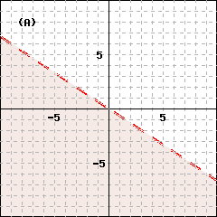
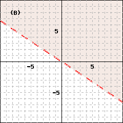
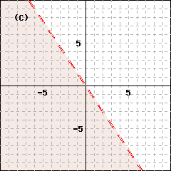
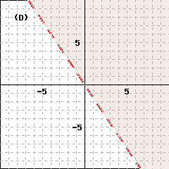
Select the appropriate graph.
(A)
(B)
(C)
(D)
none of the above
Answer1.
\(\text{Above the line}\)
Answer2.
\(\text{Dashed}\)
Answer3.
\(\text{(D)}\)
Solution.
Caution2.5.10.
We cannot choose a test point that lies on the boundary line. In Practice 3 above, we cannot use \((0, 0)\) as a test point, because it lies on the line \(y =\dfrac{-3}{2}x.\) In this case, we should choose some other point, such as \((0, 1)\) or \((1, 2)\text{.}\)
A simple example of of our method involves horizontal and vertical lines. Recall that the equation of a vertical line has the form
\begin{equation*}
x=k
\end{equation*}
where \(k\) is a constant, and a horizontal line has an equation of the form
\begin{equation*}
y=k
\end{equation*}
Even though only one variable appears in the equation \(y=k\text{,}\) if we think of it as \(0x + 1y = k\text{,}\) it represents a line in the plane. Similarly, the inequality \(x\ge k\) may represent the inequality in two variables
\begin{equation*}
x+0y\ge k
\end{equation*}
Its graph is then a region in the plane.
Example2.5.11.
Graph \(~~x\ge 2~~\) in the plane.
Solution.
First, we graph the equation \(x = 2\text{;}\) its graph is a vertical line. Because the origin does not lie on this line, we can use it as a test point. Substitute \(0\) for \(x\) (there is no \(y\)) into the inequality to obtain
\begin{equation*}
0\ge 2
\end{equation*}
Because this is a false statement, we shade the half-plane that does not contain the origin. We see that the graph of the inequality contains all points whose \(x\)-coordinates are greater than or equal to \(2\text{.}\) (Or we can use common sense to shade all points with \(x\)-coordinates greater than or equal to \(2\text{.}\))
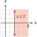
Checkpoint2.5.12.Practice 4.
Graph \(-1\lt y \le 4\) in the plane.
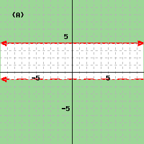
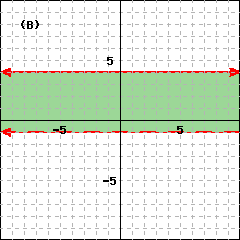
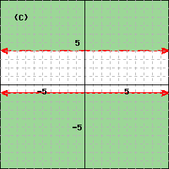
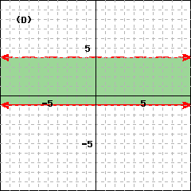
Select the appropriate graph.
(A)
(B)
(C)
(D)
none of the above
Answer.
\(\text{(B)}\)
Solution.
Subsection2.5.4Systems of Inequalities
Some applications are best described by a system of two or more inequalities. The solutions to a system of inequalities include all points that are solutions to every inequality in the system. The graph of the system is the intersection of the shaded regions for each inequality in the system. For example, the figure at right shows the solutions of the system
\begin{equation*}
y \gt x \qquad\text{ and }\qquad y \gt 2
\end{equation*}
Example2.5.13.
Laura’s diet prescribes 500 milligrams of calcium from a combination of broccoli, at 160 milligrams per serving, and zucchini, at 30 milligrams per serving. Draw a graph representing the possible combinations of broccoli and zucchini that fulfill Laura’s calcium requirements.
Solution.
Step 1.
Number of servings of broccoli: \(\quad x\)
Number of servings of zucchini: \(\quad y\)
Step 2.
To get enough calcium, Laura must choose \(x\) and \(y\) so that
It makes no sense to consider negative values of \(x\) or of \(y\text{,}\) since Laura cannot eat a negative number of servings. Thus, we have two more inequalities to satisfy:
\begin{equation*}
x \ge 0 ~~~\text{ and }~~~y \ge 0
\end{equation*}
Step 3.
We graph all three inequalities on the same axes. The inequalities \(x\ge 0\) and \(y \ge 0\) restrict the solutions to lie in the first quadrant. The solutions common to all three inequalities are shown at right.
Step 4.
Laura can choose any combination of broccoli and zucchini represented by points in the shaded region. For example, the point \((3, 1)\) is a solution to the system of inequalities, so Laura could choose to eat \(3\) servings of broccoli and \(1\) serving of zucchini.
Checkpoint2.5.14.Practice 5.
Use the following steps to graph the solutions of the system
\begin{equation*}
\begin{aligned}
3y-2x \amp\le 2\\
y \amp\gt x-1
\end{aligned}
\end{equation*}
Graph the boundary line \(3y-2x = 2\text{.}\)
Lightly shade the solutions of the inequality \(3y-2x \le 2\text{.}\)
Graph the boundary line \(y=x-1\text{.}\)
Lightly shade the solutions of \(y \gt x-1\text{.}\)
Shade the intersection of the two solutions sets.
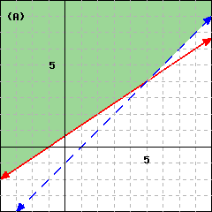
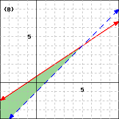
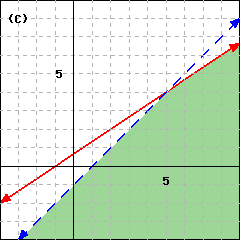
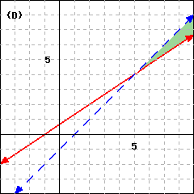
Which of the above is the best match for the solution to the system of inequalities?
(A)
(B)
(C)
(D)
Answer.
\(\text{(B)}\)
Solution.
A graph is also shown below.
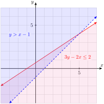
To describe the solutions of a system of inequalities, it is useful to locate the vertices, or corner points, of the boundary.
Example2.5.15.
Graph the solution set of the system below and find the coordinates of its vertices.
\begin{align*}
x - y - 2 \amp\le 0\\
x + 2y - 6 \amp\le 0\\
x \ge 0, ~~~~~y \amp\le 0
\end{align*}
Solution.
The last two inequalities, \(x\ge 0\) and \(y\ge 0\text{,}\) restrict the solutions to the first quadrant. We graph the line \(x-y-2 = 0\text{,}\) and use the test point \((0, 0)\) to shade the half-plane including the origin. Finally we graph the line \(x - 2y - 6 = 0\) and again use the test point \((0, 0)\) to shade the half-plane below the line. The intersection of the shaded regions is shown at right.
To find the coordinates of the vertices \(A\text{,}\)\(B\text{,}\)\(C\text{,}\) and \(D\text{,}\) we solve simultaneously the equations of the two lines that intersect at each vertex. \(~\alert{\text{[TK]}}\)
For \(A\text{,}\) we solve the system
\begin{align*}
x \amp= 0\\
y\amp =0
\end{align*}
to find \((0, 0)\)
For \(B\text{,}\) we solve the system
\begin{align*}
x \amp= 0\\
x + 2y \amp= 6
\end{align*}
to find \((0, 3)\)
For \(C\text{,}\) we solve the system
\begin{align*}
x + 2y \amp= 6\\
x -y \amp= 2
\end{align*}
to find \(\left(\dfrac{10}{3},\dfrac{4}{3} \right)\)
For \(D\text{,}\) we solve the system
\begin{align*}
y \amp= 0\\
x -y \amp= 2
\end{align*}
to find \(\left(2,0 \right)\)
The vertices are the points \((0, 0)\text{,}\)\((0, 3)\text{,}\)\(\left(\dfrac{10}{3},\dfrac{4}{3} \right)\text{,}\) and \((2, 0)\text{.}\)
Exercises2.5.5Problem Set 2.5
Warm Up
1.
Ivana owns two hotels, that earn annual profits of \(x\) and \(y\) dollars, respectively. She would like her total annual profit from the two hotels to be (exactly) $10,000.
Fill in the table with some possible values for \(x\) and \(y\text{,}\) in thousands of dollars. (Note that it is possible for one of the hotels to sustain a loss, or negative profit.)
\(x\)
\(\qquad\)
\(\qquad\)
\(\qquad\)
\(\qquad\)
\(y\)
\(\qquad\)
\(\qquad\)
\(\qquad\)
\(\qquad\)
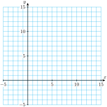
Plot the ordered pairs from your table on the grid.
Write an equation that describes this problem.
Graph all solutions of the equation.
2.
Now suppose that Ivana would like her profit to be greater than $10,000.
List four pairs of values for \(x\) and \(y\) that achieve this goal.
\(x\)
\(\qquad\)
\(\qquad\)
\(\qquad\)
\(\qquad\)
\(y\)
\(\qquad\)
\(\qquad\)
\(\qquad\)
\(\qquad\)
Plot the four points on the grid in Problem 1.
Write an inequality for \(x\) and \(y\) that describes this situation.
Shade in the region that contains all solutions of the inequality. Note that all the solutions of the inequality lie on one side of the line.
3.
Explain how the graph of the equation \(x + y = 10,000\) in Problem 1 is different from the graph of the inequality \(x + y \gt 10,000\) in Problem 2.
Describe the graph of the inequality \(x + y\ge 10,000\text{.}\)
4.
Graph the solutions of the inequality
\begin{gather*}
3x-y\ge -2
\end{gather*}
Write the equation \(3x- y = -2\) in slope-intercept form
Use the slope-intercept method to graph the line.
\(b=\)
\(m=\dfrac{\Delta y}{\Delta x}= \)
Use a test point to locate the solutions of the inequality. We can use any point for a test point, as long as it does not lie on the line! We’ll use \((1, -4)\text{.}\) Plot this point on your graph. Use algebra to decide whether \((1, -4)\) is a solution of the inequality \(3x - y \le -2.\)
Which side of the line includes all the solutions of the inequality? Shade that side of the line.
Can you suggest an easier test point instead of \((1, -4)\text{?}\)
Skills Practice
Exercise Group.
For Problems 5–14, graph the inequality.
5.
\(y \gt 2x + 4\)
6.
\(y\gt \dfrac{4}{3}x \)
7.
\(y \lt 9 - 3x\)
8.
\(2x + 5y \ge 10\)
9.
\(x + 4y \ge -6\)
10.
\(x \gt 2y - 5\)
11.
\(y \lt \dfrac{1}{2}x \)
12.
\(0 \ge x + 3y \)
13.
\(x \ge -3\)
14.
\(-1 \lt y \le 4 \)
Exercise Group.
For Problems 15 and 16, graph the system of inequalities.
\(\begin{aligned}[t]
3y - x \ge 3 \hphantom{00} \\
y - 4x \ge -10\\
y - 2 \le x \hphantom{000}\\
x\ge 0, ~ y\ge 0
\end{aligned}\)
Applications
Exercise Group.
For Problems 25–28, graph the set of solutions to the problem. For each system, \(x\ge 0\) and \(y\ge 0\text{.}\)
25.
Vassilis plans to invest at most $10,000 in two banks. One bank pays 6% annual interest and the other pays 5% annual interest. Vassilis wants at least $540 total annual interest from his two investments. Write a system of four inequalities for the amount Vassilis can invest in the two accounts, and graph the system.
26.
Jeannette has 180 acres of farmland for growing wheat or soy. She can get a profit of $36 per acre for wheat and $24 per acre for soy. She wants to have a profit of at least $5400 from her crops. Write a system of four inequalities for the number of acres she can use for each crop, and graph the solutions.
27.
Gary’s pancake recipe includes corn meal and whole wheat flour. Corn meal has 2.4 grams of linoleic acid and 2.5 milligrams of niacin per cup. Whole wheat flour has 0.8 grams of linoleic acid and 5 milligrams of niacin per cup. These two ingredients should not exceed 3 cups total. The mixture should provide at least 3.2 grams of linoleic acid and at least 10 milligrams of niacin. Write a system of five inequalities for the amount of corn meal and the amount of whole wheat flour Gary can use, and graph the solutions.
28.
Cho and his brother go into business making comic book costumes. They need 1 hour of cutting and 2 hours of sewing to make a Batman costume. They need 2 hours of cutting and 1 hour of sewing to make a Wonder Woman costume. They have available at most 10 hours per day for cutting and at most 8 hours per day for sewing. They must make at least one costume each day to stay in business. Write a system of five inequalities for the number of each type of costume Cho can make, and graph the solutions.